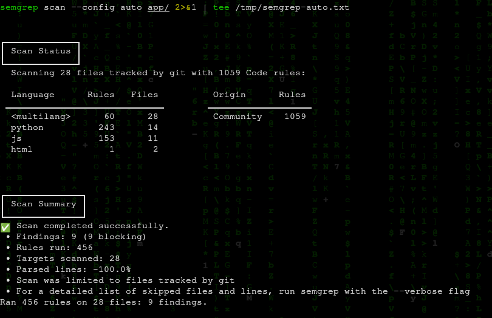
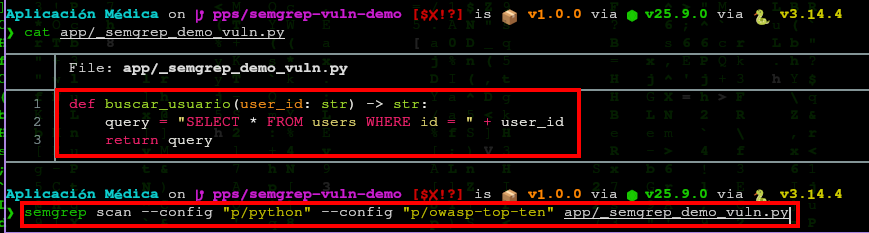
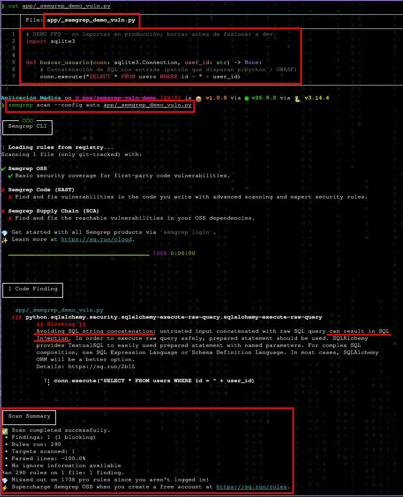
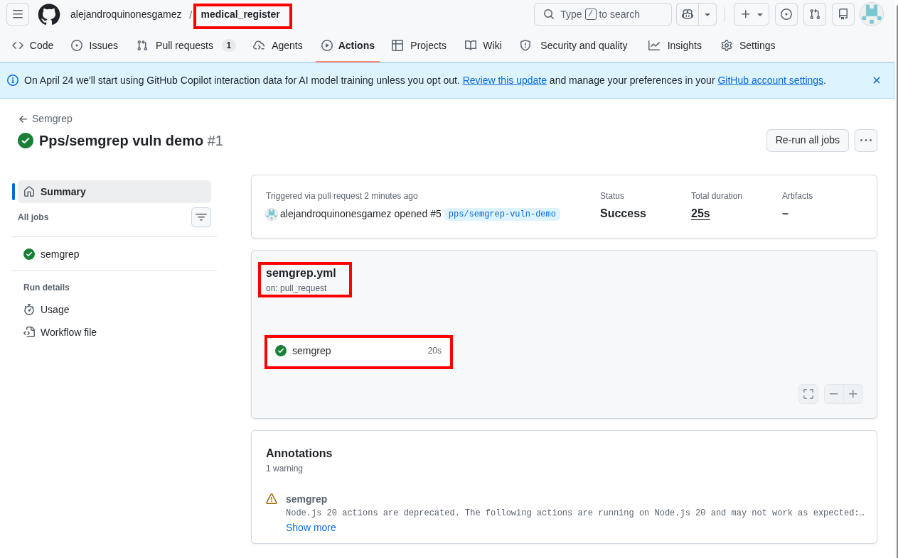
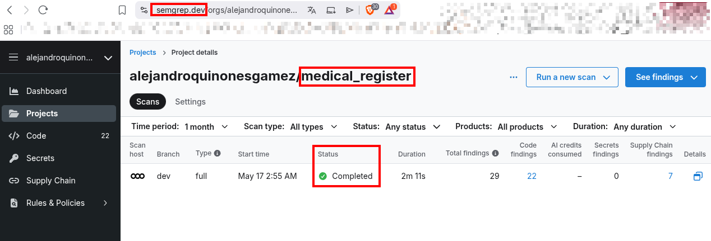
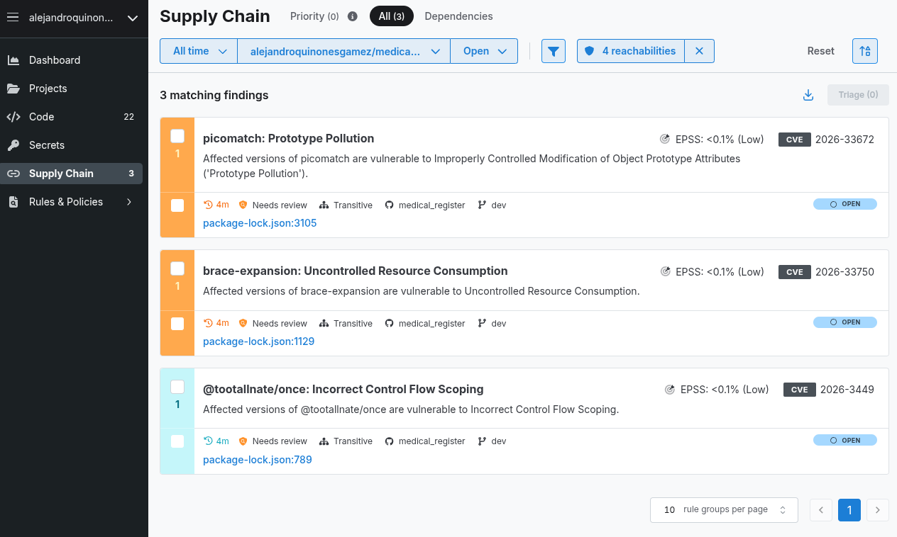

Semgrep — SAST y reglas personalizadas¶
Autores: Alejandro Quiñones Gámez & Adrián Bertos Gómez
Asignatura: PPS — Puesta a Producción Segura
Curso: Curso de Especialización en Ciberseguridad en Tecnologías de la Información
Centro: IES Zaidín-Vergeles
Enunciado: docs/git_docs/PPS_git/semgrep.html (Fernando Raya, 2026-04-22)
Repositorios de este trabajo (espacio de trabajo PPS)¶
Proyecto |
Ruta local |
Remoto |
Rama habitual |
|---|---|---|---|
Cliente Android |
|
|
|
Backend |
|
|
|
Semgrep y los workflows del §6 suelen aplicarse al backend (Python/Flask bajo app/). El cliente Android (Kotlin) puede escanearse por separado desde su propio directorio si la práctica lo pide.
1. Introducción¶
Semgrep (semantic grep) es un analizador estático (SAST) que busca patrones en el árbol sintáctico (AST), no solo texto plano. Permite detectar vulnerabilidades recurrentes (inyecciones, configuraciones inseguras, APIs obsoletas), reglas de cumplimiento y, con configuraciones ampliadas, solaparse con detección de secretos o cadena de suministro según el conjunto de reglas.
El enunciado pide: integrar Semgrep, registrarse en la plataforma, probar opciones gratuitas, introducir una vulnerabilidad de prueba y documentar su detección, y crear una regla personalizada (o excluir directorios).
Referencias:
Quickstart — Scan your project (flujo sin cuenta GitHub/GitLab si aplica)
2. Qué aporta (resumen del enunciado)¶
Ventaja |
Descripción breve |
|---|---|
Detección de vulnerabilidades |
Patrones inseguros por lenguaje (p. ej. SQL dinámico mal construido). |
Cumplimiento |
Reglas alineadas con estándares internos o OWASP. |
Personalización |
Reglas YAML cercanas al código fuente. |
Velocidad |
Motor optimizado frente a SAST clásicos más pesados. |
3. Escaneo manual local¶
Instalación típica (ver documentación actual):
python3 -m pip install semgrep
# o binario / contenedor según https://semgrep.dev/docs/getting-started/quickstart
Escaneo rápido con reglas recomendadas automáticamente:
cd "/home/alejandro/DriveLocal/alejandro/Ciberseguridad/PPS - Puesta a Producción Segura/Aplicación Médica"
semgrep scan --config auto
Enfoque web / APIs Python del enunciado:
semgrep scan --config "p/python" --config "p/owasp-top-ten"
Los identificadores exactos de los packs en el registro pueden evolucionar; comprobar en Semgrep Registry. El enunciado HTML cita
p/owasp-top-10, pero en el registro actual el pack esp/owasp-top-ten(OWASP Top Ten);p/owasp-top-10devuelve HTTP 404.
4. Escaneos gestionados (managed scans)¶
Permiten ejecutar análisis sin montar infraestructura propia. Requieren conectar el repositorio (GitHub, GitLab, Bitbucket, Azure DevOps según el enunciado) y seguir el asistente de managed scans en la documentación enlazada.
Prueba en este trabajo: cuenta en semgrep.dev, proyecto alejandroquinonesgamez/medical_register, rama dev. Escaneo gestionado Completed (~2 min): 29 findings (22 Code, 0 Secrets, 7 Supply Chain). Detalle de dependencias transitivas en package-lock.json (véase §9, capturas Cloud).
5. Regla personalizada de ejemplo¶
El enunciado sugiere prohibir print() en producción; en backend Flask suele ser más útil una regla orientada a debug activo o SECRET_KEY débil. Dos ejemplos:
5.1. Regla tipo enunciado (no-print)¶
Archivo semgrep-rules/no-print.yaml:
rules:
- id: no-print-in-prod
patterns:
- pattern: print(...)
message: "No uses print() en código de producción; usa logging."
languages: [python]
severity: WARNING
Ejecución:
semgrep scan --config semgrep-rules/no-print.yaml app/
5.2. Regla más útil para Flask (ejemplo académico)¶
Detectar app.run(debug=True):
rules:
- id: flask-debug-true
patterns:
- pattern: app.run(..., debug=True, ...)
message: "No dejes debug=True en código fusionado a main."
languages: [python]
severity: ERROR
6. Integración en CI/CD (GitHub Actions)¶
El enunciado incluye un workflow con imagen semgrep/semgrep y comando semgrep ci, usando SEMGREP_APP_TOKEN para la Semgrep AppSec Platform:
name: Semgrep
on:
pull_request: {}
workflow_dispatch: {}
push:
branches: [main, master, dev]
paths:
- .github/workflows/semgrep.yml
schedule:
- cron: "20 17 * * *"
permissions:
contents: read
jobs:
semgrep:
name: semgrep/ci
runs-on: ubuntu-latest
container:
image: semgrep/semgrep
if: (github.actor != 'dependabot[bot]')
steps:
- uses: actions/checkout@v4
- run: semgrep ci
env:
SEMGREP_APP_TOKEN: ${{ secrets.SEMGREP_APP_TOKEN }}
Notas prácticas:
Crear el token en Semgrep Settings y guardarlo como secreto del repositorio
SEMGREP_APP_TOKEN.Si el plan gratuito no incluye
semgrep ciconectado a la nube, documentar la alternativa:semgrep scan --config auto --erroren CI sin token.Ajustar el
crona una hora aleatoria distinta para no concentrar carga.
7. Actividad práctica (resolución)¶
7.1. Vulnerabilidad de prueba¶
Rama: pps/semgrep-vuln-demo (PR hacia dev en medical_register).
Fichero demo: app/_semgrep_demo_vuln.py (solo para evidencia; eliminar antes de fusionar a dev).
import sqlite3
def buscar_usuario(conn: sqlite3.Connection, user_id: str) -> None:
conn.execute("SELECT * FROM users WHERE id = " + user_id)
Lección práctica: una versión inicial solo devolvía la cadena SQL (return query) sin llamar a execute(). Con p/python + p/owasp-top-ten el escaneo terminó con 0 findings (156 reglas, 1 fichero). Tras mover la concatenación a conn.execute(...), --config auto detectó el patrón:
Campo |
Valor |
|---|---|
Regla |
|
Severidad |
Blocking |
Línea |
7 ( |
Pack OWASP: el enunciado cita p/owasp-top-10; en el registro vigente el id es p/owasp-top-ten (p/owasp-top-10 → HTTP 404).
7.2. Regla personalizada y exclusiones¶
Regla propia:
semgrep-rules/no-flask-debug.yaml(flask-debug-true— prohíbeapp.run(..., debug=True, ...)).Exclusiones:
.semgrepignoreexcluyetests/y carpetas demo de otros apartados PPS (_demo_gitleaks/,_demo_github/).CI sin token de nube:
.github/workflows/semgrep.yml— reglas del repo en cada PR/push adev; job adicional OWASP solo si el PR incluye el fichero demo.
8. Relación con el backend (medical_register)¶
En el clone del backend, el código principal vive bajo app/ (Flask, JS estático bajo app/static/).
Escaneo base (evidencia §9.1):
cd "/home/alejandro/DriveLocal/alejandro/Ciberseguridad/PPS - Puesta a Producción Segura/Aplicación Médica"
semgrep scan --config auto app/ 2>&1 | tee /tmp/semgrep-auto.txt
Resultado documentado: 28 ficheros rastreados por git, 456 reglas ejecutadas, 9 findings (todos blocking) en Python, JavaScript y HTML.
Escaneo del demo (evidencia §9.3):
semgrep scan --config auto app/_semgrep_demo_vuln.py
.semgrepignore en la raíz del repo excluye tests/ y demos de otros apartados PPS.
9. Evidencias (entrega) — Apartado 5: Semgrep¶
# |
Qué demuestra |
Fichero |
|---|---|---|
1 |
Escaneo |
|
2 |
Fichero demo en rama |
|
3 |
Detección efectiva: regla, línea 7 y finding blocking ( |
|
4 |
Regla personalizada |
|
5 |
CI sin |
|
6 |
Semgrep Cloud: proyecto y escaneo en |
|
7 |
Semgrep Cloud: pestaña Supply Chain (CVE en dependencias) |
|
8 |
Run CI en rojo con demo |
No incluido |
{kind=link}
{kind=link}
{kind=link}
{kind=link}
{kind=link}
{kind=link}






Flujo documentado:
Instalación CLI (
pipx install semgrep) y escaneo amplio deapp/con--config auto.Rama
pps/semgrep-vuln-democonapp/_semgrep_demo_vuln.py.Ajuste del patrón inseguro hasta obtener finding (concatenación en
execute, no soloreturn).Regla propia +
.semgrepignore+ workflow GitHub Actions.Antes de fusionar a
dev:git rm app/_semgrep_demo_vuln.pyy dejar reglas/CI.
Artefactos en el repositorio:
Ruta |
Rol |
|---|---|
|
Regla personalizada (debug Flask) |
|
Excluye |
|
CI: reglas del repo; OWASP en PR si existe el demo |
|
Solo en rama de práctica; no debe quedar en |
Guía operativa: pasos.md §5.
Autores: Alejandro Quiñones Gámez & Adrián Bertos Gómez
Asignatura: PPS — Puesta a Producción Segura
Curso: Curso de Especialización en Ciberseguridad en Tecnologías de la Información
Centro: IES Zaidín-Vergeles